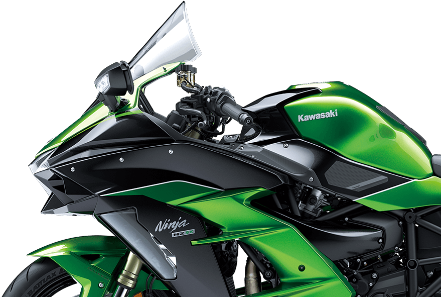

Supercharge your journey
While the Ninja H2™R was born from a pure pursuit of supercharged hypersport performance, the new Ninja H2 SX SE, developed from the same bloodline, is the ultimate production supercharged sportbike that combines the most desirable street qualities of hypersport, supersport and sport touring bikes. The balanced supercharged engine offers a versatile engine character that delivers both exhilarating supercharged acceleration and superb fuel economy.
Enjoy the ride with premium features such as the heated grips, full-color instrumentation, LED cornering lamps, large windshield, DC outlet plus special color and graphics. Aggressive body design, specially machined wheels and all-LED lighting are among the styling highlights that make the Ninja H2 SX SE stand apart as an icon of sport performance, luxury and style. This is where luxury and performance reach stunning new heights.
POWER FOR THE DISTANCE
The balanced supercharged engine was developed for everyday street-riding situations and delivers a versatile engine character that enables relaxed long-distance riding, easy manageability at slow speeds, exhilarating acceleration and superb fuel efficiency.
IMPELLER BUILT IN-HOUSE
The complex impeller is formed from a forged aluminum block using a 5-axis CNC machining center for precision and durability. Grooves etched into the blade surfaces help direct the airflow
STEERING FOR TIGHT TURNS
-
The Ninja H2™ SX supercharger features an in-house designed impeller—the shape and angle of the blades are optimized for the high-efficiency engine
-
The complex impeller is formed from a forged aluminum block using a 5-axis CNC machining center for precision and durability. Grooves etched into the blade surfaces help direct the airflow